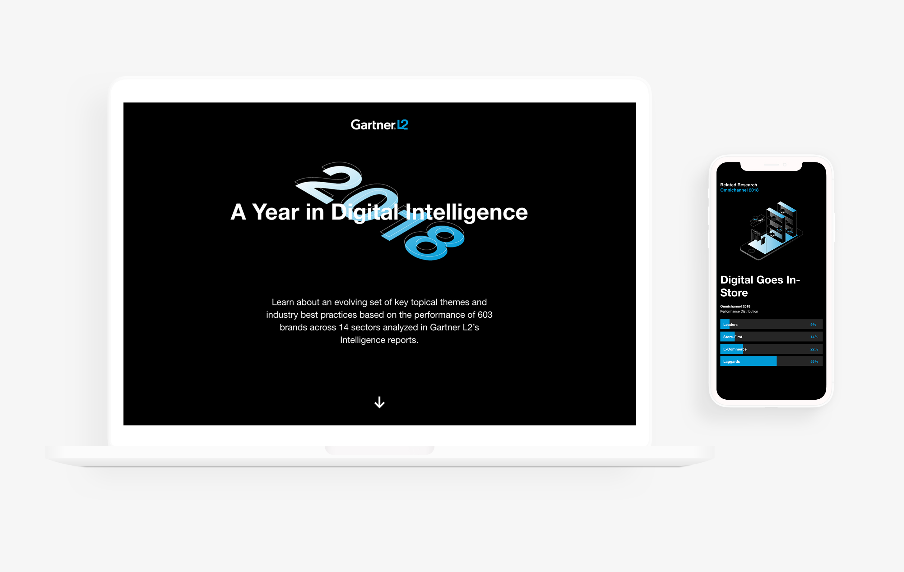
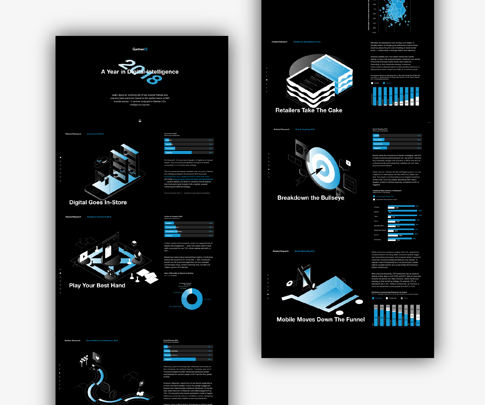
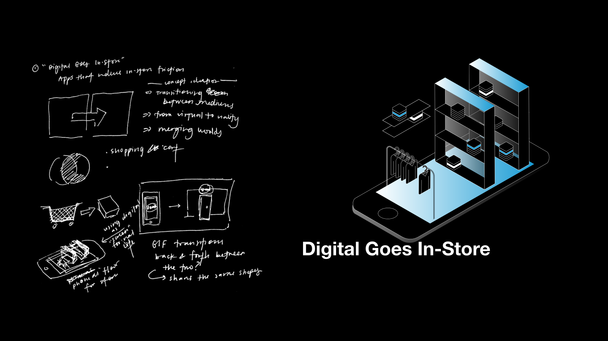
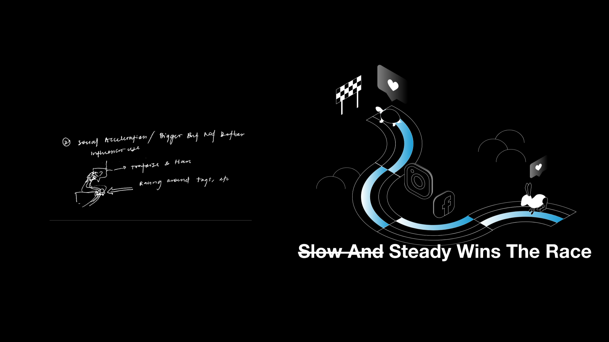
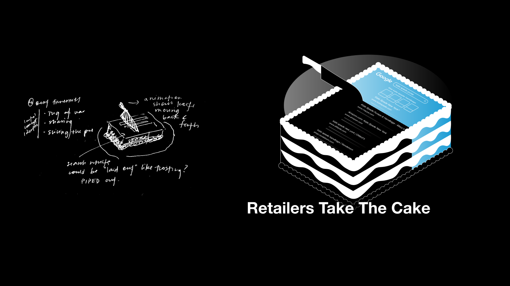
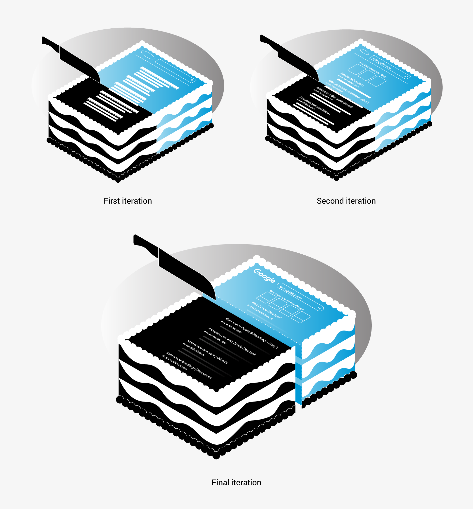

Minh-Anh Nguyen

This project is an interactive webpage that highlights digital marketing trends in 2018, according to Gartner L2.
Historically, L2’s end-of-year interactive recap has been an annual report of company performance. It was a good way to underscore L2’s growth to stakeholders and its emphasis on visual communication. However, the end-of-year review was never catered to our audience: marketing teams more interested in L2’s insights than our growth as an organization.
When I joined the team and took over this project in 2017, we pivoted to a content-driven direction, capitalizing on a missed opportunity to create more value for our audience. In our most recent end-of-year review, we took this opportunity to bring to life insights spanning multiple reports from Gartner L2’s cross-sector research over the course of the year.
Wright Rickman (development)
Lili Meng (research, writing)
Art direction, illustration

One challenge that working for L2 constantly presents is finding ways to make digital marketing insights memorable and vivid. It's a company-wide challenge, and one way that researchers address this is by titling their insights with tongue-in-cheek quips.
I wanted to translate L2’s signature tongue-in-cheek voice into a visual medium. Isometric illustrations became my canvas for fusing these witty metaphors with all things 2D that Gartner L2 is concerned with: emails, ads, websites, Facebook and Instagram pages. To visually communicate each insight, I worked with the research team to come up with apt metaphors that translated easily into illustration, and worked with our developer to split each illustration into component SVGs to animate.
Here's a bit about how these illustrations came about.

I like to use verbal reframing as a tool to come up with visual metaphors. For “Digital Goes In-Store”, I tried conceptualizing the idea of apps that reduce in-store friction: “transitioning between mediums”, “from virtual to reality”, “merging worlds”.

For brands, partnering with influencers with niche followings can sometimes be more effective than partnering with influencers who have large fanbases. The Tortoise and the Hare came to mind immediately as an apt allegory.
I worked with researchers to rephrase the copy to emphasize this. The strikethrough clarifies that slowness for a brand, unlike for the Tortoise, might not be the best choice.

Through critique sessions with my team, we realized that an illustration of a webpage needs to be specific in order to communicate its concept clearly. I added and tweaked the details of this illustration draft by draft.
Ask for help. Throughout the process of working on this project, there were many moments where I was unable to figure out how to communicate an insight on my own. In response to these difficulties, I reached out to the research team and other designers for their thoughts on how I could make an illustration clearer or more true to the insight at hand.
Don’t become stuck if a solution doesn't present itself immediately. I’ve learned through many projects to not become “married” to an idea that I believe in. However, it's easy to forget the other side of the coin; not having a confident vision to follow doesn't mean that I need to become stuck during a project—especially in the beginning stages.
In this project, there were many illustrations that I wasn’t confident about at the sketch stage. Regardless, I pressed on in creating my illustrations, and being able to iterate throughout the design process helped the "missing" parts come into clearer focus.